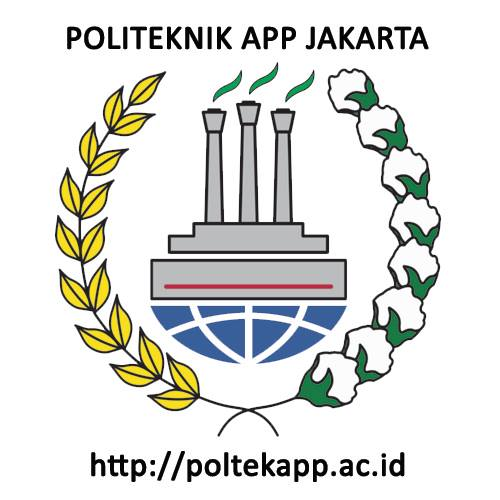
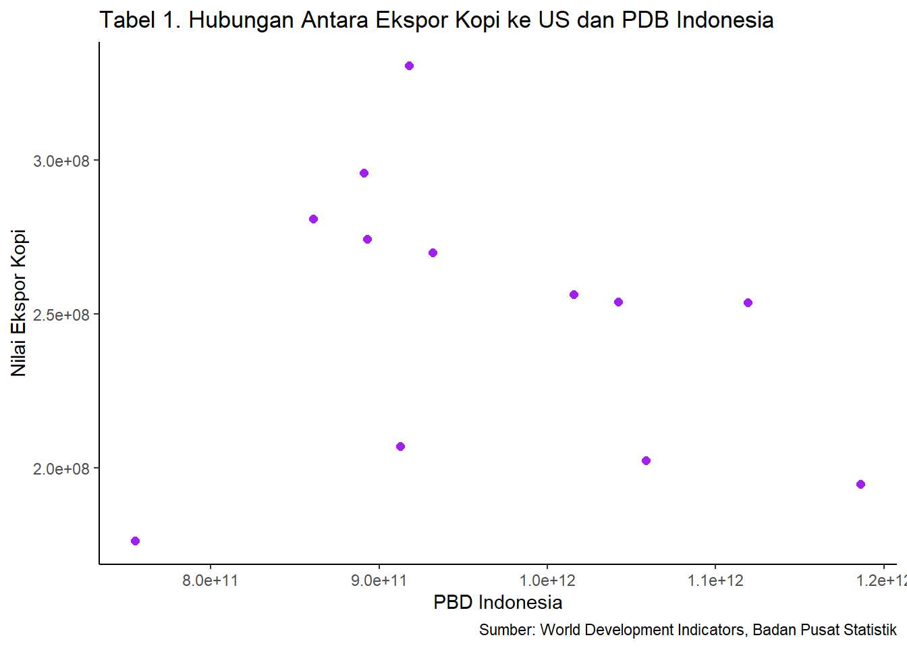

Analisis Pengaruh Ekspor Kopi ke Amerika Serikat Terhadap Pertumbuhan Ekonomi Indonesa Tahun 2010-2021
Metode Penelitian Politeknik APP Jakarta
Author
Nur Athifah Ayu Anhar
Published
January 18, 2023

1 1 Pendahuluan
1.1 1.2 Latar Belakang
Kopi merupakan salah satu komoditi yang paling banyak diekspor, oleh karena itu kopi menjadi sektor yang sangat berpengaruh untuk nilai ekspor atau bisa dikatakan sebagai sumber utama devisa negara. Pada tahun 2021 Indonesia masih menjadi eksportir kopi terbesar keempat, di antara Brazil yang menempatkan posisi pertama, Vietnam menjadi posisi kedua, dan posisi ketiga yaitu Kolombia. Amerika Serikat menjadi negara tujuan utama ekspor kopi Indonesia dikarenakan masyarakat Amerika Serikat menyukai kopi Indonesia yang memiliki cita rasa yang khas, memiliki banyak variasi, dan juga memiliki kualitas yang sangat baik. Penelitian ini bertujuan untuk mengetahui pengaruh dari ekspor kopi ke Amerika Serikat terhadap pertumbuhan ekonomi Indonesia.
Menurut data dari Badan Pusat Statistik, pada tahun 2021 Indonesia menyumbang nilai ekspor pada komoditi kopi yaitu sebesar USD 842.500.000 dengan volume 380.200 kg. Sedangkan pada tahun 2020 nilai ekspor pada komoditi kopi sedikit lebih rendah apabila dibandingkan pada tahun 2021 yaitu sebesar USD 809.200.000 dengan volume 375.600 kg. Apabila hanya ekspor kopi ke Amerika Serikat saja, Indonesia telah menyumbang nilai ekspor sebesar USD 194.769,10 di tahun 2021. Sedangkan di tahun 2020 nilai ekspor kopi ke Amerika Serikat lebih tinggi bila dibandingkan dari tahun sebelumnya, yaitu sebesar USD 202.352,00. Dari data tersebut Indonesia mengalami fluktuasi. Hal ini terjadi karena adanya beberapa faktor salah satunya yaitu adanya virus COVID-19 yang menyebabkan nilai kurs, harga kopi, dan PDB Amerika Serikat serta Indonesia mengalami perubahan.
1.2 1.3 Batasan Masalah
Pembatasan suatu masalah digunakan untuk membatasi jangkauan proses yang akan dibahas agar tetap pada satu topik dan menghindari pelebaran pokok permasalahan. Peneliti menetapkan batasan masalah atas beberapa hal, yaitu membahas terkait nilai ekspor kopi ke Amerika Serikat, pertumbuhan, dan Produk Domestik Bruto Indonesia.
1.3 1.4 Rumusan masalah
Bagaimana pengaruh ekspor kopi ke Amerika Serikat secara simultan terhadap pertumbuhan ekonomi Indonesia tahun 2010-2021?
Bagaimana pengaruh ekspor kopi ke Amerika Serikat secara parsial terhadap pertumbuhan ekonomi Indonesia tahun 2010-2021?
1.4 1.5 Tujuan dan manfaat penelitian
Untuk mengetahui pengaruh ekspor kopi ke Amerika Serikat secara simultan terhadap pertumbuhan ekonomi Indonesia dari tahun ke tahun.
Untuk mengetahui pengaruh ekspor kopi ke Amerika Serikat secara parsial terhadap pertumbuhan ekonomi Indonesia dari tahun ke tahun.
2 2 Studi pustaka
2.1 2.1 Perdagangan Internasional
Secara umum perdagangan internasional merupakan sarana untuk melakukan pertukaran barang dan jasa internasional. Dalam lima puluh tahun terakhir, perdagangan internasional telah tumbuh dan berkembang secara drastis dan dalam ukuran yang besar. Hal ini disebabkan oleh adanya kerjasama yang dilakukan oleh berbagai negara untuk menghilangkan proteksi perdagangan dan adanya keinginan untuk mempromosikan perdagangan barang dan jasa secara bebas. Menurut pandangan Basri dan Munandar, perdagangan internasional merupakan perdagangan yang terjadi karena ada negara yang memiliki sebuah sumber daya yang berbeda dengan negara yang diajak kerja sama. Menurut Basri dan Munandar, perdagangan internasional ini dapat terjadi karena adanya aktivitas produksi barang dalam jumlah yang cukup besar.
2.2 2.2 Produk Domestik Bruto
Produk Domestik Bruto (PDB) adalah pendapatan total dan pengeluaran total nasional atas output barang dan jasa pada periode tertentu. PDB ini dapat mencerminkan kinerja ekonomi, sehingga semakin tinggi PDB suatu negara maka dapat dikatakan bahwa semakin bagus pula kinerja ekonomi di negara tersebut. Menurut Sukirno (2013:34) dalam bukunya makroekonomi teori pengantar, Produk Domestik Bruto (PDB) dapat diartikan sebagai nilai barang-barang dan jasa-jasa yang diproduksikan di dalam negara dalam satu tahun tertentu.
2.2.1 2.3 Ekspor
Menurut Amir M.S. (2009;1) , Ekspor adalah mengeluarkan barang dari peredaran dalam masyarakat dan mengirimkan ke luar negeri sesuai ketentuan pemerintah dan mengharapkan pembayaran dalam valuta asing.
library(readxl)dat<-read_excel('uasmetopel.xlsx')library(ggplot2)ggplot(data=dat, aes(x=X, y=Y))+geom_point(color='purple', size=2)+labs(title="Tabel 1. Hubungan Antara Ekspor Kopi ke US dan PDB Indonesia",x="PBD Indonesia",y="Nilai Ekspor Kopi",caption ="Sumber: World Development Indicators, Badan Pusat Statistik") +theme_classic()

Figure 1: Hubungan Antara Nilai Ekspor Kopi ke US dan PDB Indonesia
3.2 3.2 Metode analisis
Teknik analisis yang digunakan dalam penelitian ini adalah teknik kuantitatif dan penjabaran deskriptif. Teknik analisis kuantitatif yang dilakukan dalam penelitian ini dengan melakukan regresi univariat atau Ordinary Least Square (OLS) menggunakan R sebagai alat bantu pengolahan data dengan satu variabel independen. Package yang digunakan adalah library(tidyverse), library(readxl), library (WDI), library(ggplot). Penelitian ini bertujuan untuk mengetahui pengaruh ekspor kopi ke Amerika Serikat terhadap pertumbuhan ekonomi Indonesia dari tahun ke tahun. Rumus yang digunakan untuk regresi, sebagai berikut:
\[
x_{t}=\beta_0 + \beta_1 y_t+\mu_t
\]
Di mana \(x_t\) adalah PDB Indonesia dan \(y_t\) adalah Nilai Ekspor Kopi ke Amerika Serikat.
4 4 Pembahasan
4.1 4.1 Pembahasan masalah
Nilai Ekspor Kopi ke Amerika Serikat
Tahun
Nilai Ekspor ($)
Pertumbuhan (%)
2010
176360600.00
-
2011
274491000.00
56
2012
330814700.00
21
2013
207037600.00
-37
2014
295903100.00
43
2015
281079100.00
-5
2016
269895600.00
-4
2017
256351400.00
-5
2018
254030700.00
-1
2019
253830100.00
0
2020
202352000.00
-20
2021
194769100.00
-4
Rata-rata
38
Sumber: Badan Pusat Statistik (data diolah)
Berdasarkan tabel diatas ditunjukkan bahwa dari tahun 2010-2021 nilai ekspor kopi Indonesia ke Amerika dinyatakan fluktuasi atau naik turun setiap tahunnya. Dari tahun 2010 ke tahun 2011 nilai ekspor kopi Indonesia ke Amerika tercatat meningkat dengan perkembangan 56%. Namun, dari tahun 2012 ke tahun 2013 mengalami penurunan sebesar 37%. Di tahun 2014 nilai ekspor kopi kembali naik di angka 43%, namun mengalami penurunan selama 2015 hingga 2021 secara terus meneru. Puncaknya adalah di tahun 2020 yang mengalami penurunan sebesar 20% hal tersebut dikarenakan pandemi COVID-19.
Produk Domestik Bruto Indonesia
Tahun
PDB Indonesia ($)
Pertumbuhan (%)
2010
755094160363.07
-
2011
892969107923.09
18
2012
917869910105.75
3
2013
912524136718.02
-1
2014
890814755233.23
-2
2015
860854235065.08
-3
2016
931877364177.74
8
2017
1015618742565.81
9
2018
1042271531011.99
3
2019
1119099868265.25
7
2020
1058688935454.78
-5
2021
1186092991320.04
12
Rata-rata
4,4
Sumber: World Development Indicators (data diolah)
Berdasarkan tabel di atas, pertumbuhan PDB Indonesia tahun 2010-2021 tumbuh secara fluktuatif. Pada tahun 2010-2011 PDB Indonesia mengalami perkembangan sebesar 18%. Pertumbuhan ekonomi pada tahun tersebut perkembang baik, pendapatan masyarakat dapat menopang konsumsi masyarakat dan tumbuh stabil. Pada tahun-tahun berikutnya sampai pada tahun 2015 PDB Indonesia terus mengalami penurunan sampai di tahun terendahnya yaitu 2015 yaitu sebesar -3% sejumlah USD 860.854.235.065. Pada 2 tahun berikutnya tahun 2016-2017 PDB Indonesia mengalami pertumbuhan sebesar 8% kenaikan ini disebabkan struktur ekonomi Indonesia secara spasial tahun 2017 didominasi oleh kelompok provinsi di Pulau Jawa dan Pulau Sumatera. Kelompok provinsi di Pulau Jawa memberikan kontribusi terbesar terhadap Produk Domestik Bruto, yakni sebesar 58,49 persen, diikuti oleh Pulau Sumatera sebesar 21,66 persen, dan Pulau Kalimantan 8,20 persen. Selanjutnya di tahun 2020 PDB Indonesia mengalami penurunan kembali sebesar -5% dan mengalami kenaikan kembali di tahun berikutnya yaitu sebesar 12%
4.2 4.2 Analisis masalah
Variabel
Estimate
Std. Error
t value
Probability
Intercept
1.079e+12
2.082e+11
5.184
0.000411 ***
Y
-4.563e+02
8.210e+02
-0.556
0.590561
Multiple R-squared
0.02997
Adjusted R-squared
-0.06704
F-statistic
0.3089
p-value
0.5906
Uji simultan (Uji F) dilakukan untuk menguji seberapa besar pengaruh dari variabel independen yaitu volume ekspor kopi terhadap variabel dependen. Berdasarkan hasil regresi diperoleh nilai F-statistic sebesar 0.3089 dengan probabilitas 0.5906 (> α=0,1). Sehingga variabel volume ekspor kopi ke Amerika Serikat tidak berpengaruh signifikan terhadap pertumbuhan ekonomi Indonesia selama periode 2010-2021.
Nilai R² digunakan untuk menunjukkan seberapa besar pengaruh variabel independen terhadap variabel dependen. Berdasarkan pada tabel di atas, hasil nilai R² menunjukkan bahwa pertumbuhan ekonomi Indonesia dipengaruhi oleh variabel volume ekspor kopi ke Amerika Serikat sebesar 0.02997 atau 2.997%. Artinya hanya 2.997% perkembangan ekonomi Indonesia dipengaruhi oleh volume ekspor kopi ke Amerika Serikat. Sedangkan sebanyak 97,003% dipengaruhi oleh variabel lain yang tidak termasuk dalam penelitian ini.
Dari hasil perhitungan di atas, pada variabel Y atau nilai ekspor kopi ke Amerika Serikat didapatkan t-value -0.556 dengan probabilitas 0.590561 > α=0,1. Maka dari itu dapat dikatakan bahwa secara parsial nilai ekspor kopi ke Amerika Serikat tidak berpengaruh secara signifikan terhadap pertumbuhan ekonomi Indonesia pada periode 2010-2021.
Call:
lm(formula = X ~ Y, data = uasmetopel)
Residuals:
Min 1Q Median 3Q Max
-2.437e+11 -6.386e+10 -1.735e+10 7.354e+10 1.957e+11
Coefficients:
Estimate Std. Error t value Pr(>|t|)
(Intercept) 1.079e+12 2.082e+11 5.184 0.000411 ***
Y -4.563e+02 8.210e+02 -0.556 0.590561
---
Signif. codes: 0 '***' 0.001 '**' 0.01 '*' 0.05 '.' 0.1 ' ' 1
Residual standard error: 1.252e+11 on 10 degrees of freedom
Multiple R-squared: 0.02997, Adjusted R-squared: -0.06704
F-statistic: 0.3089 on 1 and 10 DF, p-value: 0.5906
5 5 Kesimpulan
Berdasarkan data penelitian di atas membuktikan bahwa ekpor kopi ke Amerika Serikat tidak berpengaruh secara signifikan terhadap pertumbuhan ekonomi Indonesia. Dengan variabel independen yaitu nilai ekspor kopi ke Amerika Serikat yang menjadi faktor yang dapat mendorong naik dan turunnya variabel dependen yaitu PDB Indonesia. Nilai ekspor kopi Indonesia ke Amerika Serikat hanya menyumbang sekitar 3% dari total Produk Domestik Bruto Indonesa pada tahun 2010-2021. Sedangkan 97% lainnya dipengaruhi oleh variabel lain.
6 6 Referensi
Badan Pusat Statistik. (n.d.). Retrieved January 20, 2023, from https://www.bps.go.id/statictable/2014/09/08/1014/ekspor-kopi-menurut-negara-tujuan-utama-2000-2021.html
GDP (current US$)—Indonesia | Data 2010-2021 (2022). Retrieved January 20, 2023, from https://data.worldbank.org/indicator/NY.GDP.MKTP.CD?locations=ID
Fadila, F. (2022). Pengertian dan Teori Perdagangan Internasional Menurut Para Ahli. Gramedia Literasi. https://www.gramedia.com/literasi/pengertian-dan-teori-perdagangan-internasional/